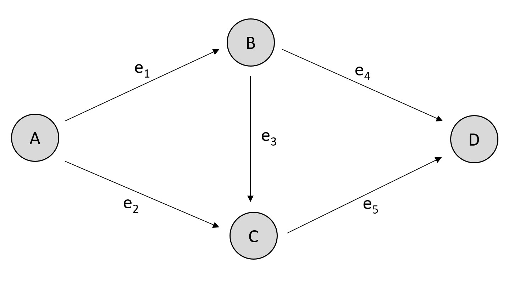

User Guide¶
Motivation
Minimum cost flows coincide with user equilibrium and system optimum in traffic network if the edge cost are transformed by:
The link travel time is defined as: show/hide
Braess Paradox: Adding capacity to a network might decrease network efficiency due to selfish participants.
{kind=link}
Pigou’s Example: An upper bound for the Price of Anarchy
SiouxFalls: calculating and plotting a fixed user equilibrium
SiouxFalls: parametric Price of Anarchy
Barcelona: Price of Anarchy
SiouxFalls: calculating and plotting a fixed user equilibrium
Motivation
You want to set up a custom graph with paminco? Learn how to specify graphs, how to allow for negative flows (we treat all graphs as directed), and how to specify cost and demand functions.
Graph Setup: directed graphs (with negative flows)
We set up directed graphs, learn about graph representations and how to set lower and upper boundaries for the edge flows in order to allow for negative edge flows (thus creating undirected graphs).
{kind=link}
Edge Cost: polynomial, piecewise quadratic, or symbolic
We show how to equip a network with cost functions, i.e., how the cost \(F_e\) of an edge \(e\) vary by the flow on that edge.

NetworkCost (abstract) PolynomialCost PiecewiseQuadraticCost SymbolicCost
Demand Function: linear and affine demand functions
We illustrate how to specify the demand function for a network. Typically this is a linear demand funtion that scales the node rates (encoded with a demand vector \(\mathbf{b}\)) by a demand multiplier \(\lambda\): \(\mathbf{h}_\text{linear}(\lambda) = \lambda \mathbf{b}\) or an affine demand function that adds a base demand \(\mathbf{h}_\text{affine}(\lambda) = \mathbf{b}_0 + \lambda \mathbf{b}\).
DemandFunction (abstract) LinearDemandFunction AffineDemandFunction
Read-in from XML: How to read in network from XML
Plotting: How to specify node positions and plot with NetworkX
We specify node positions and used them to plot a network with NetworkX.
{kind=link}